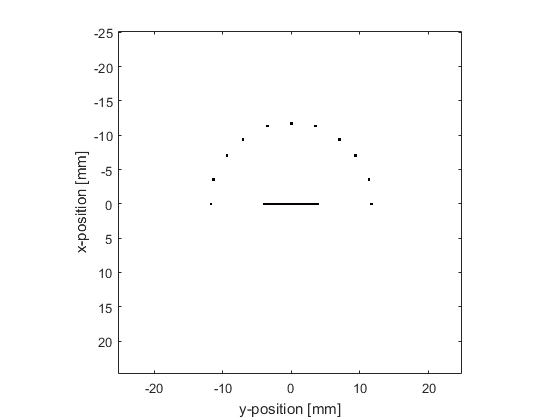
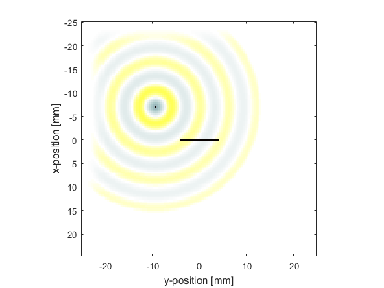
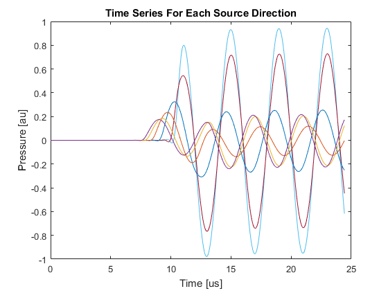
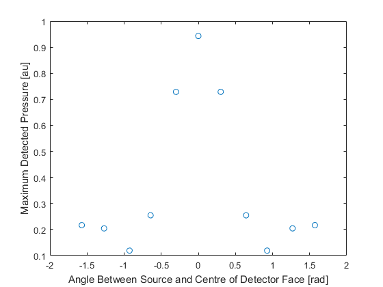

Modelling Sensor Directivity In 2D Example
This example demonstrates how the sensitivity of a large single element detector varies with the angular position of a point-like source. It builds on Monopole Point Source In A Homogeneous Propagation Medium and Focussed Detector In 2D examples.
Contents
Defining a large element detector
The sensor is defined as a binary sensor mask in the shape of a line.
% define a large area detector sz = 20; % [grid points] sensor.mask = zeros(Nx, Ny); sensor.mask(Nx/2 + 1, (Ny/2 - sz/2 + 1):(Ny/2 + sz/2 + 1)) = 1;
Defining a collection of point sources
Equi-spaced point sources are then defined at a fixed distance from the centre of the detector face. To do this, the Cartesian coordinates of the source points are calculated using makeCartCircle. A binary source mask corresponding to these Cartesian points is then calculated using cart2grid. The indices of the matrix elements for which the binary mask is equal to 1 (the source points) are found using find.
% define equally spaced point sources lying on a circle centred at the % centre of the detector face radius = 30; % [grid points] points = 11; circle = makeCartCircle(radius * dx, points, [0, 0], pi); % find the binary sensor mask most closely corresponding to the Cartesian % coordinates from makeCartCircle circle = cart2grid(kgrid, circle); % find the indices of the sources in the binary source mask source_positions = find(circle == 1);
A time varying pressure source is defined to drive the point sources.
% define a time varying sinusoidal source source_freq = 0.25e6; % [Hz] source_mag = 1; % [Pa] source.p = source_mag * sin(2 * pi * source_freq * kgrid.t_array); % filter the source to remove high frequencies not supported by the grid source.p = filterTimeSeries(kgrid, medium, source.p);
Running simulations for each point source
For each point source, a new binary source mask is defined, and the simulation is run. When each simulation has finished, the returned sensor data is summed together to mimic a single large detector.
% run a simulation for each of these sources to see the effect that the % angle from the detector has on the measured signal for source_loop = 1:points % select a point source source.p_mask = zeros(Nx, Ny); source.p_mask(source_positions(source_loop)) = 1; % create a display mask to display the transducer display_mask = source.p_mask + sensor.mask; % run the simulation input_args = {'DisplayMask', display_mask, 'PlotScale', [-0.5, 0.5]}; sensor_data = kspaceFirstOrder2D(kgrid, medium, source, sensor, input_args{:}); % average the data recorded for each grid point to simulate the % measured signal from a large aperture, single element, detector single_element_data(:, source_loop) = sum(sensor_data, 1); end
The recorded time series corresponding to the different source positions are plotted below. The maximum of each time series are also plotted as a function of angle, where the angle is defined between the detector plane and a line joining the point source and the centre of the detector face. The directionality introduced by the large size of the detector is clearly seen.
 